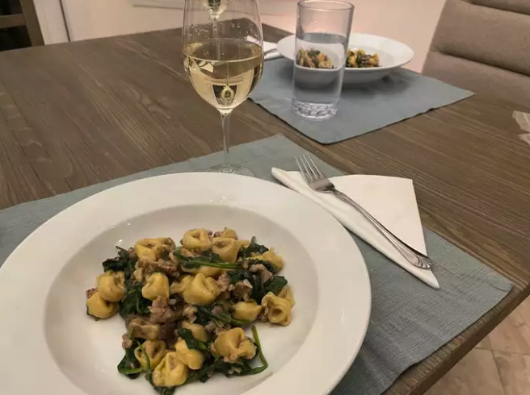

Heat butter in a large, deep skillet over medium heat. Cook and stir mushrooms,
1/2 cup white wine, and 1 clove minced garlic until liquid has reduced and
mushrooms have softened, about 5 minutes. Remove from heat and place in a
bowl.
Heat the same skillet over medium-high heat. Cook and stir Italian sausage in
the hot skillet until browned and crumbly, 5 to 7 minutes, dividing it into bite-
sized portions while stirring. Remove excess grease by placing paper towels
onto a plate and dumping browned sausage onto it to drain. Return sausage to
the skillet.
Return cooked mushrooms back to the skillet with sausage and add tortellini,
Alfredo basil sauce, remaining 1/2 cup white wine, and remaining garlic. Reduce
heat to medium-low. Cover and cook, stirring occasionally, for about 10
minutes. Add spinach; cover and cook until spinach is wilted, 3 to 4 minutes
more. Mix well to combine. Remove from heat and serve.